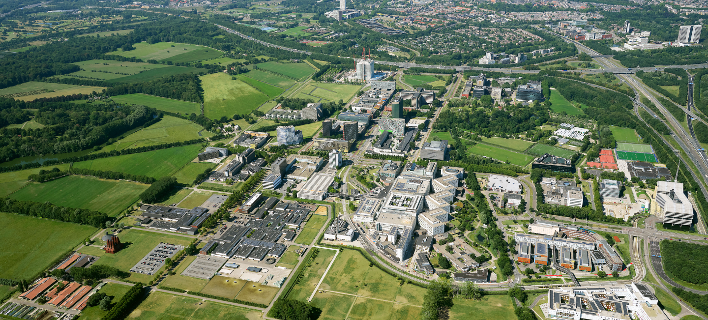

Newsletter#01
A vibrant and inspirational environment for those who work. MEER INFO

GenDx obtained the newest EU Quality Management Certificate (IVDR)
Nieuwsfotografie gaat over alles wat er in de samenleving speelt, zet onderwerpen op de agenda en legt ontwikkelingen vast die de basis vormen van het collectief geheugen. De Zilveren Camera is de belangrijkste prijs voor fotojournalisten in Nederland. Winnaar van de Zilveren Camera 2021 is de foto waarop minister Kajsa Ollongren het Binnenhof verlaat na een positieve coronatest.
Discover MoreGenDx obtained the newest EU Quality Management Certificate (IVDR)
Nieuwsfotografie gaat over alles wat er in de samenleving speelt, zet onderwerpen op de agenda en legt ontwikkelingen vast die de basis vormen van het collectief geheugen. De Zilveren Camera is de belangrijkste prijs voor fotojournalisten in Nederland. Winnaar van de Zilveren Camera 2021 is de foto waarop minister Kajsa Ollongren het Binnenhof verlaat na een positieve coronatest.
GenDx obtained the newest EU Quality Management Certificate (IVDR)
Nieuwsfotografie gaat over alles wat er in de samenleving speelt, zet onderwerpen op de agenda en legt ontwikkelingen vast die de basis vormen van het collectief geheugen. De Zilveren Camera is de belangrijkste prijs voor fotojournalisten in Nederland. Winnaar van de Zilveren Camera 2021 is de foto waarop minister Kajsa Ollongren het Binnenhof verlaat na een positieve coronatest.